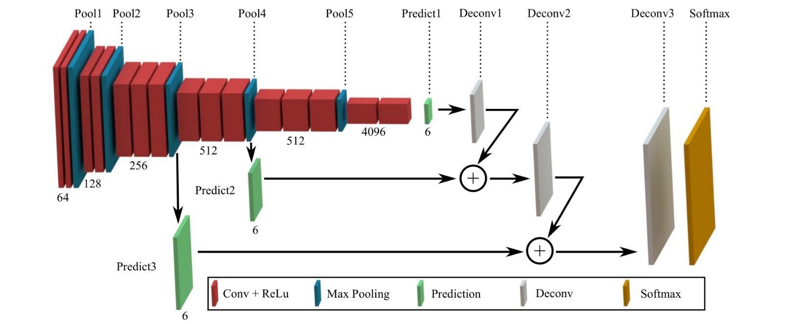
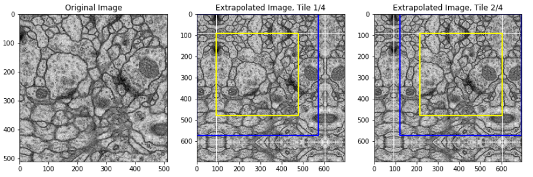
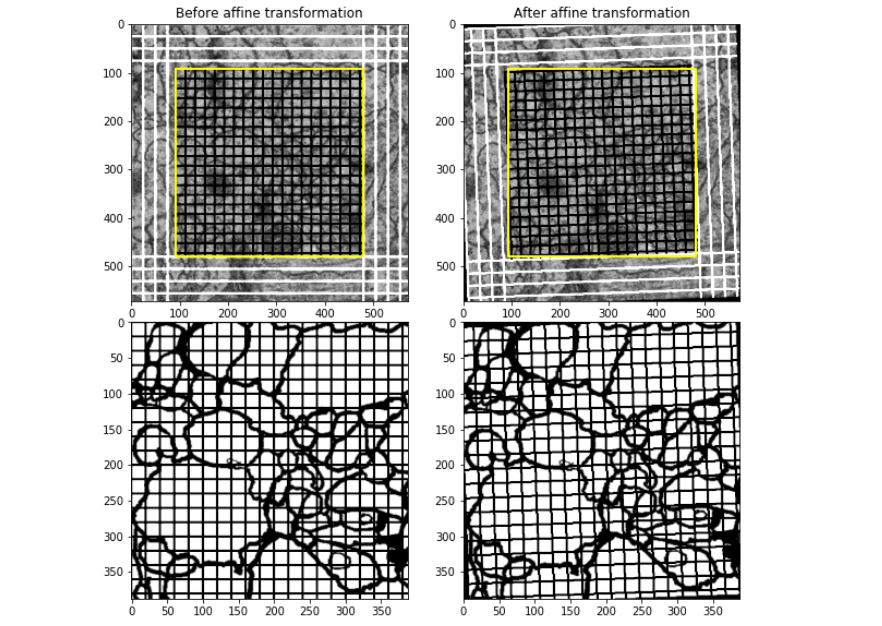
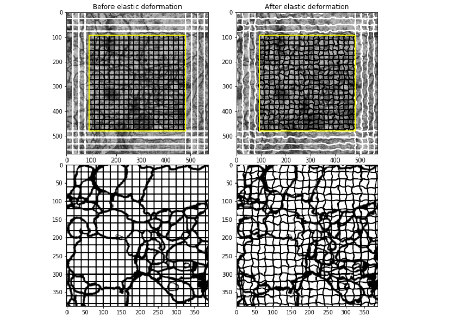
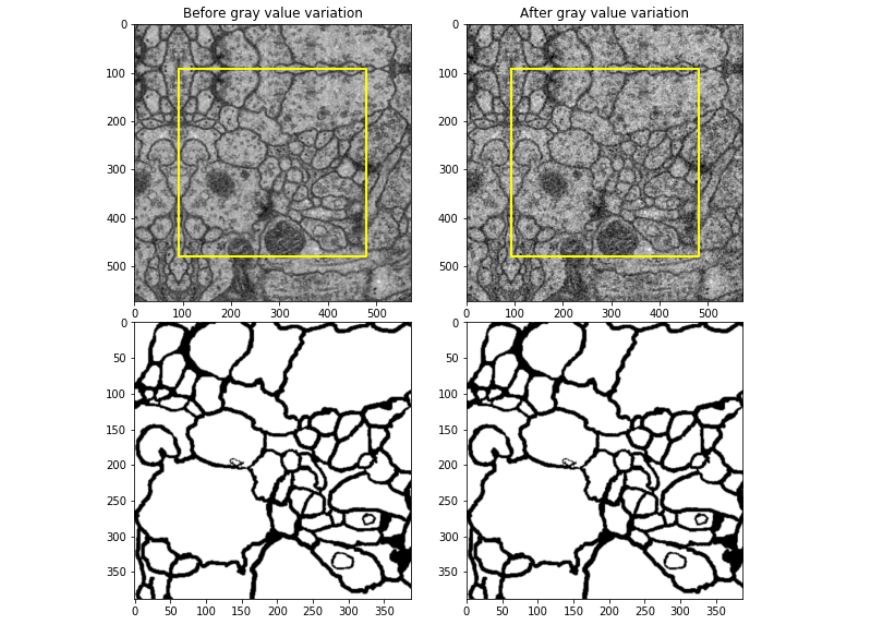
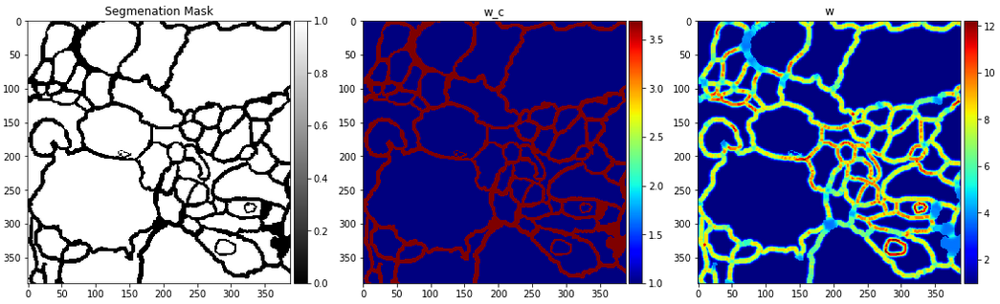
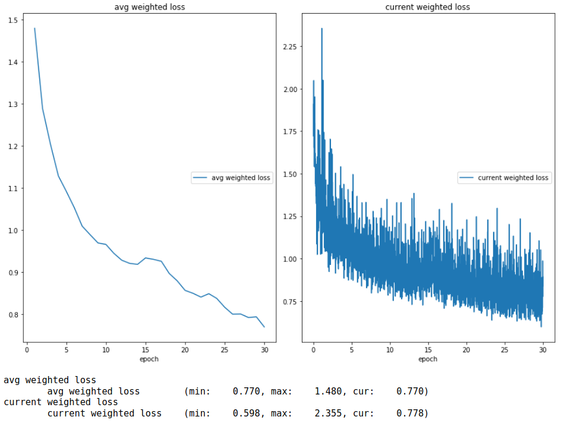
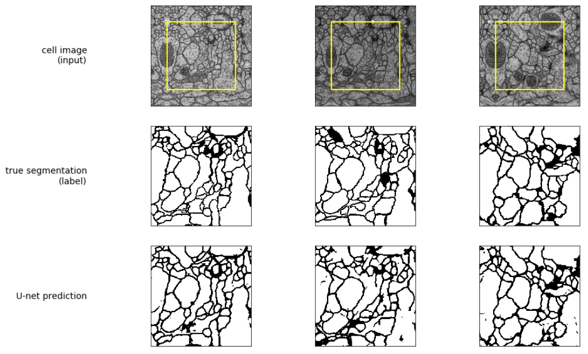

Ronneberger et al. (2015) introduced a novel neural network architecture to generate better semantic segmentations (i.e., class label assigend to each pixel) in limited datasets which is a typical challenge in the area of biomedical image processing (see figure below for an example). In essence, their model consists of a U-shaped convolutional neural network (CNN) with skip connections between blocks to capture context information, while allowing for precise localizations. In addition to the network architecture, they describe some data augmentation methods to use available data more efficiently. By the time the paper was published, the proposed architecture won several segmentation challenges in the field of biomedical engineering, outperforming state-of-the-art models by a large margin. Due to its success and efficiency, U-Net has become a standard architecture when it comes to image segmentations tasks even in the non-biomedical area (e.g., image-to-image translation, neural style transfer, Multi-Objetct Network).
U-Net builds upon the ideas of Fully Convolutional Networks (FCNs) for Semantic Segmentation by Long et al. (2015) who successfully trained FCNs (including convolutional prediction, upsampling layers and skip connections) end-to-end (pixels-to-pixels) on semantic segmentation tasks. U-Net is basically a modified version of the FCN by making the architecture more symmetric, i.e., adding a more powerful expansive path. Ronneberger et al. (2015) argue that this modification yields more precise segmentations due to its capacity to better propagate context information to higher resolution layers.
FCN architecture: The main idea of the FCN architecture is to take a standard classification network (such as VGG-16), discard the final classifier layer, convert fully connected layers into convolutions (i.e., prediction layers) and add skip connections to (some) pooling layers, see figure below. The skip connections consist of a prediction (\(1 \times 1\) convolutional layer with channel dimension equal to number of possible classes) and a deconvolutional (upsampling) layer.

Example of FCN Architecture. VGG-16 net is used as feature learning part. Numbers under the cubes indicate the number of output channels. The prediction layer is itself a \(1 \times 1\) convolutional layer (the final output consists only of 6 possible classes). A final softmax layer is added to output a normalized classification per pixel. Taken from Tai et al. (2017)
U-Net architecture: The main idea of the U-Net architecture is to build an encoder-decoder FCN with skip connections between corresponding blocks, see figure below. The left side of U-Net, i.e., contractive path or encoder, is very similar to the left side of the FC architecture above. The right side of U-Net, i.e., expansive path or decoder, differs due to its number of feature channels and the convolutional + ReLu layers. Note that the input image size is greater than the output segmentation size, i.e., the network only segments the inner part of the image1.
Motivation: Semantic segmentation of images can be divided into two tasks
Context Information Retrieval: Global information about the different parts of the image, e.g., in a CNN classification network after training there might be some feature representation for nose, eyes and mouth. Depending on the feature combination at hand, the network may classify the image as human or not human.
Localization of Context Information: In addition to what, localization ensures where. Semantic segmentation is only possible when content information can be localized. Note: In image classification, we are often not interested in where2.
Long et al. (2015) argue that CNNs during classification tasks must learn useful feature representations, i.e., classification nets are capable to solve the context information retrieval task. Fully connected layers are inappropriate for semantic segmentation as they throw away the principle of localization. These two arguments motivate the use of FCNs that take the feature representation part of classification nets and convert fully connected layers into convolutions. During the contractive path, information gets compressed into coarse appearance/context information. However, in this process the dimensionality of the input is reduced massively. Skip connections are introduced to combine coarse, semantic information of deeper layers with finer, appearance information of early layers. Thereby, the localization task is addressed.
Ronneberger et al. (2015) extend these ideas by essentially increasing the capacity of the decoder path. The symmetric architecture allows to combine low level feature maps (left side, fine information) with high level feature maps (right side, coarse information) more effectively such that context information can be better propagated to higher resolution layers (top right). As a result, more precise segmentations can be retrieved even with few training examples, indicating that the optimization problem is better posed in U-Nets.
Implementatation
Ronneberger et al. (2015) demonstrated U-Net application results for three different segmentation tasks and open-sourced their original U-Net implementation (or rather the ready trained network). The whole training process and data augmentation procedures are not provided (except for overlap-tile segmentation). The following reimplementation aims to give an understanding of the whole paper (data augmentation and training process included), while being as simple as possible. Note that there are lots of open-source U-Net reimplementations out there, however most of them are already modified versions.
EM Dataset
Only the first task of the three different U-Net applications is reimplemented: The segmentation of neuronal structures in electron microscopic (EM) recordings. The training data consists of 30 images (\(512 \times 512\) pixels with 8-bit grayscale) from the ventral nerve cord of some species of fruit flies together with the corresponding 30 binary segmentation masks (white pixels for segmented objects, black for the rest), see gif below. The dataset formed part of the 2D EM segmentation challenge at the ISBI 2012 conference. Although the workshop competition is done, the challenge remains open for new contributions. Further details about the data can be found at the ISBI Challenge website, where also the training and test data can be downloaded (after registration).
Training neural networks on image data typically requires large amounts of data to make the model robust (i.e., avoid overfitting) and accurate (i.e., avoid underfitting). However, data scarcity is a common problem in biomedical segmentation tasks, since labeling is expensive and time consuming. In such cases, data augmentation offers a solution by generating additional data (using plausible transformations) to expand the training dataset. In most image segmentation tasks the function to be learned has some transformation-invariance properties (e.g., translating the input should result in a translated output). The data augmentation applied by Ronneberger et al. (2015) can be divided into four parts:
Overlap-tile strategy is used to divide an arbitrary large image into several overlaping parts (each forming an input and label to the training algorithm). Remind that the input to the neural network is greater than the output, in case of the EM dataset the input is even greater than the whole image. Therefore, Ronneberger et al. (2015) expand the images by mirroring at the sides. The overlap-tile strategy is shown below. Depending on the stride (i.e., how much the next rectangle is shifted to the right), the training dataset is enlarged by a factor greater than 4.

Overlap-Tile Strategy for seamless segmentation of arbitrary large images. Blue area depicts input to neural network, yellow area corresponds to the prediction area. Missing input is extrapolated by mirroring (white lines). The number of tiles depends on the stride length (here: stride=124). Image created with visualize_overlap_tile_strategy (code presented at the end of this section).
Affine transformations are mathematically defined as geometric transformations preserving lines and parallelisms, e.g., scaling, translation, rotation, reflection or any mix of them. Ronneberger et al. (2015) state that in case of microscopical image data mainly translation and rotation invariance (as affine transformation invariances) are desired properties of the resulting function. Note that the overlap-tile strategy itself leads to some translation invariance.

Affine transformation visualization. Left side shows input and label data before transformation is applied. Right side shows the corresponding data after random affine transformation (random rotation and shifting). The grid is artificially added to emphasize that image and label are transformed in the same way. Image created with visualize_data_augmentation (code presented at the end of this section).
Elastic deformations are basically distinct affine transformations for each pixel. The term is probably derived from physics in which an elastic deformation describes a temporary change in shape of an elastic material (due to induced force). The transformation result looks similar to the physics phenomenon, see image below. Ronneberger et al. (2015) noted that elastic deformations seem to be a key concept for successfully training with few samples. A possible reason may be that the model’s generalization capabilities improve more by elastic deformations since the resulting images have more variability than with coherent affine transformations.

Elastic deformation visualization. Left side shows input and label data before deformation is applied. Right side shows the corresponding data after deformation. The grid is artificially added to emphasize that image and label are deformed in the same way. Image created with visualize_data_augmentation (code presented at the end of this section).
Implementing elastic deformations basically consists of generating random displacement fields, convolving these with a Gaussian filter for smoothening, scaling the result by a predefined factor to control the intensity and then computing the new pixel values for each displacement vector (using interpolation within the old grid), see Best Practices for CNNs by Simard et al. (2003) for more details.
Color variations or in this case rather gray value variations in the input image should make the network invariant to small color changes. This can easily be implemented by adding Gaussian noise (other distributions may also be possible) to the input image, see image below.

Gray value variation visualization. Left side shows input image before noise is applied. Right side shows the corresponding data after transformation (segmentation mask does not change). Image created with visualize_data_augmentation (code presented at the end of this section).
The whole data augmentation process is put into a self written Pytorch Dataset class, see code below. Note that while this class includes all described transformations (affine transformation, elastic deformation and gray value variation), in the __get_item__ method only elastic_deform is applied to speed up the training process3. However, if you want to create a more sophisticated data augmentation process, you can easily add the other transformations in the __get_item__ method.
Code
from torch.utils.data import Datasetimport numpy as npfrom scipy.ndimage.interpolation import map_coordinatesfrom scipy.signal import convolve2dimport torchvision.transforms.functional as TFclass EM_Dataset(Dataset):"""EM Dataset (from ISBI 2012) to train U-Net on including data augmentation as proposed by Ronneberger et al. (2015) Args: imgs (tensor): torch tensor containing input images [1, 512, 512] labels (tensor): torch tensor containing segmented images [1, 512, 512] stride (int): stride that is used for overlap-tile strategy, Note: stride must be chosen such that all labels are retrieved transformation (bool): transform should be applied (True) or not (False) ------- transformation related ------- probability (float): probability that transformation is applied alpha (float): intensity of elastic deformation sigma (float): std dev. of Gaussian kernel, i.e., smoothing parameter kernel dim (int): kernel size is [kernel_dim, kernel_dim] """def__init__(self, imgs, labels, stride, transformation=False, probability=None, alpha=None, sigma=None, kernel_dim=None):super().__init__()assertisinstance(stride, int) and stride <=124and\round((512-388)/stride) == (512-388)/strideself.orig_imgs = imgsself.imgs = EM_Dataset._extrapolate_by_mirroring(imgs)self.labels = labelsself.stride = strideself.transformation = transformationif transformation:assert0<= probability <=1self.probability = probabilityself.alpha = alphaself.kernel = EM_Dataset._create_gaussian_kernel(kernel_dim, sigma)returndef__getitem__(self, index):"""images and labels are divided into several overlaping parts using the overlap-tile strategy """ number_of_tiles_1D = (1+int((512-388)/self.stride)) number_of_tiles_2D = number_of_tiles_1D**2 img_index =int(index/number_of_tiles_2D)# tile indexes of image tile_index = (index % number_of_tiles_2D) tile_index_x = (tile_index % number_of_tiles_1D) *self.stride tile_index_y =int(tile_index / number_of_tiles_1D) *self.stride img =self.imgs[img_index, :, tile_index_y:tile_index_y +572, tile_index_x:tile_index_x +572] label =self.labels[img_index, :, tile_index_y: tile_index_y +388, tile_index_x: tile_index_x +388]ifself.transformation:if np.random.random() >1-self.probability: img, label = EM_Dataset.elastic_deform(img, label, self.alpha,self.kernel)return (img, label)def__len__(self): number_of_imgs =len(self.imgs) number_of_tiles = (1+int((512-388)/self.stride))**2return number_of_imgs * number_of_tiles@staticmethoddef gray_value_variations(image, sigma):"""applies gray value variations by adding Gaussian noise Args: image (torch tensor): extrapolated image tensor [1, 572, 572] sigma (float): std. dev. of Gaussian distribution Returns: image (torch tensor): image tensor w. gray value var. [1, 572, 572] """# see https://stats.stackexchange.com/a/383976 noise = torch.randn(image.shape, dtype=torch.float32) * sigmareturn image + noise@staticmethoddef affine_transform(image, label, angle, translate):"""applies random affine translations and rotation on image and label Args: image (torch tensor): extrapolated image tensor [1, 572, 572] label (torch tensor): label tensor [1, 388, 388] angle (float): rotation angle translate (list): entries correspond to horizontal and vertical shift Returns: image (torch tensor): transformed image tensor [1, 572, 572] label (torch tensor): transformed label tensor [1, 388, 388] """# transform to PIL image = transforms.ToPILImage()(image[0]) label = transforms.ToPILImage()(label[0])# apply affine transformation image = TF.affine(image, angle=angle, translate=translate, scale=1, shear=0) label = TF.affine(label, angle=angle, translate=translate, scale=1, shear=0)# transform back to tensor image = transforms.ToTensor()(np.array(image)) label = transforms.ToTensor()(np.array(label))return image, label@staticmethoddef elastic_deform(image, label, alpha, gaussian_kernel):"""apply smooth elastic deformation on image and label data as described in [Simard2003] "Best Practices for Convolutional Neural Networks applied to Visual Document Analysis" Args: image (torch tensor): extrapolated image tensor [1, 572, 572] label (torch tensor): label tensor [1, 388, 388] alpha (float): intensity of transformation gaussian_kernel (np array): gaussian kernel used for smoothing Returns: deformed_img (torch tensor): deformed image tensor [1, 572, 572] deformed_label (torch tensor): deformed label tensor [1, 388, 388] code is adapted from https://github.com/vsvinayak/mnist-helper """# generate standard coordinate grids x_i, y_i = np.meshgrid(np.arange(572), np.arange(572)) x_l, y_l = np.meshgrid(np.arange(388), np.arange(388))# generate random displacement fields (uniform distribution [-1, 1]) dx =2*np.random.rand(*x_i.shape) -1 dy =2*np.random.rand(*y_i.shape) -1# smooth by convolving with gaussian kernel dx = alpha * convolve2d(dx, gaussian_kernel, mode='same') dy = alpha * convolve2d(dy, gaussian_kernel, mode='same')# one dimensional coordinates (neccessary for map_coordinates) x_img = np.reshape(x_i + dx, (-1, 1)) y_img = np.reshape(y_i + dy, (-1, 1)) x_label = np.reshape(x_l + dx[92:480, 92:480], (-1, 1)) y_label = np.reshape(y_l + dy[92:480, 92:480], (-1, 1))# deformation using map_coordinates interpolation (spline not bicubic) deformed_img = map_coordinates(image[0], [y_img, x_img], order=1, mode='reflect') deformed_label = map_coordinates(label[0], [y_label, x_label], order=1, mode='reflect')# reshape into desired shape and cast to tensor deformed_img = torch.from_numpy(deformed_img.reshape(image.shape)) deformed_label = torch.from_numpy(deformed_label.reshape(label.shape))return deformed_img, deformed_label@staticmethoddef _extrapolate_by_mirroring(data):"""increase data by mirroring (needed for overlap-tile strategy) Args: data (torch tensor): shape [num_samples, 1, 512, 512] Returns: extrapol_data (torch tensor): shape [num_samples, 1, 696, 696] """ num_samples =len(data) extrapol_data = torch.zeros(num_samples, 1, 696, 696)# put data into center of extrapol data extrapol_data[:,:, 92:92+512, 92:92+512] = data# mirror left extrapol_data[:,:, 92:92+512, 0:92] = data[:,:,:,0:92].flip(3)# mirror right extrapol_data[:,:, 92:92+512, 92+512::] = data[:,:,:,-92::].flip(3)# mirror top extrapol_data[:,:, 0:92,:] = extrapol_data[:,:,92:92+92,:].flip(2)# mirror buttom extrapol_data[:,:, 92+512::,:] = extrapol_data[:,:, 512:512+92,:].flip(2)return extrapol_data@staticmethoddef _create_gaussian_kernel(kernel_dim, sigma):"""returns a 2D Gaussian kernel with the standard deviation denoted by sigma Args: kernel_dim (int): kernel size will be [kernel_dim, kernel_dim] sigma (float): std dev of Gaussian (smoothing parameter) Returns: gaussian_kernel (numpy array): centered gaussian kernel code is adapted from https://github.com/vsvinayak/mnist-helper """# check if the dimension is oddif kernel_dim %2==0:raiseValueError("Kernel dimension should be odd")# initialize the kernel kernel = np.zeros((kernel_dim, kernel_dim), dtype=np.float16)# calculate the center point center = kernel_dim/2# calculate the variance variance = sigma **2# calculate the normalization coefficeint coeff =1./ (2* variance)# create the kernelfor x inrange(0, kernel_dim):for y inrange(0, kernel_dim): x_val =abs(x - center) y_val =abs(y - center) numerator = x_val**2+ y_val**2 denom =2*variance kernel[x,y] = coeff * np.exp(-1.* numerator/denom)# normalise itreturn kernel/sum(sum(kernel))# generate datasetsstride =124whole_dataset = EM_Dataset(imgs, labels, stride=stride, transformation=True, probability=0.5, alpha=50, sigma=5, kernel_dim=25)
The visualization functions used to generate the images in this section are provided below:
Code
import matplotlib.pyplot as pltdef visualize_overlap_tile_strategy(dataset, img_index, tile_indexes):# compute tiling data number_of_tiles_1D = (1+int((512-388)/dataset.stride)) number_of_tiles_2D = number_of_tiles_1D**2# original image [1, 512, 512] orig_img = dataset.orig_imgs[img_index]# extrapolated image [1, 696, 696] extrapol_img = dataset.imgs[img_index]# start plotting fig = plt.figure(figsize=(14, 7))# original image plt.subplot(1, len(tile_indexes) +1, 1) plt.imshow(transforms.ToPILImage()(orig_img), cmap='gray') plt.title('Original Image')# extrapolated image with bounding boxes and mirror lines for tile_indexesfor index, tile_index inenumerate(tile_indexes): plt.subplot(1, len(tile_indexes) +1, 2+ index) plt.imshow(transforms.ToPILImage()(extrapol_img), cmap='gray')# calculate tile index x and y tile_ix = (tile_index % number_of_tiles_1D) * dataset.stride tile_iy =int(tile_index / number_of_tiles_1D) * dataset.stride# add focus of current input tile plt.plot([tile_ix, tile_ix +572, tile_ix +572, tile_ix, tile_ix], [tile_iy, tile_iy, tile_iy +572, tile_iy +572, tile_iy],'blue', linewidth=2)# add focus of current segmentation mask tile_ix, tile_iy = tile_ix +92, tile_iy +92 plt.plot([tile_ix, tile_ix +388, tile_ix +388, tile_ix, tile_ix], [tile_iy, tile_iy, tile_iy +388, tile_iy +388, tile_iy],'yellow', linewidth=2)# add mirror lines plt.vlines([92, 604], 0, 696, 'white', linewidth=1) plt.hlines([92, 604], 0, 696, 'white', linewidth=1) plt.title('Extrapolated Image, Tile '+str(tile_index +1) +'/'+str(number_of_tiles_2D)) plt.xlim(0, 696) plt.ylim(696, 0)returndef visualize_data_augmentation(dataset, index, show_grid, kind):# get untransformed img, label dataset.transformation =False img, label = dataset[index]# copy image (since it may be modified) cur_img = img.clone().numpy() cur_label = label.clone().numpy()if show_grid:# modify image to include outer grid (outside of label) cur_img[0, 0:91:25] =10.0 cur_img[0, 480::25] =10.0 cur_img[0, :, 0:91:25] =10.0 cur_img[0, :, 480::25] =10.0# modify image to include label grid cur_img[0, 92:480:20, 92:480] =-5 cur_img[0, 92:480, 92:480:20] =-5# modify label to include label grid cur_label[0, ::20] =-5 cur_label[0, :, ::20] =-5if kind =='elastic deformation':# set transformation kernel = dataset.kernel alpha = dataset.alpha new_img, new_label = EM_Dataset.elastic_deform(cur_img, cur_label, alpha, kernel)elif kind =='affine transformation': angle = np.random.randint(-3, 3) translate =list(np.random.randint(-3, 3, size=2)) new_img, new_label = EM_Dataset.affine_transform(cur_img, cur_label, angle, translate)elif kind =='gray value variation': sigma =0.2 new_img = EM_Dataset.gray_value_variations(img, sigma) new_label = labelelse:raiseNameError('Unknown `kind`, can only be `elastic deformation`, '+'`affine transformation` or `gray value variation`')# start plotting fig = plt.figure(figsize=(10,10)) plt.subplot(2, 2, 1) plt.title('Before '+ kind) plt.imshow(cur_img[0], cmap='gray', aspect='equal', interpolation='gaussian', vmax=1, vmin=0)# focus of current segmentation mask plt.plot([92, 480, 480, 92, 92], [92, 92, 480, 480, 92],'yellow', linewidth=2) plt.subplots_adjust(hspace=0.01) plt.subplot(2,2,3) plt.imshow(cur_label[0], cmap='gray', aspect='equal', interpolation='gaussian', vmax=1, vmin=0) plt.subplot(2,2,2) plt.title('After '+ kind) plt.imshow(new_img[0], cmap='gray', aspect='equal', interpolation='gaussian', vmax=1, vmin=0)# focus of current segmentation mask plt.plot([92, 480, 480, 92, 92], [92, 92, 480, 480, 92],'yellow', linewidth=2) plt.subplot(2,2,4) plt.imshow(new_label[0], cmap='gray', aspect='equal', interpolation='gaussian', vmax=1, vmin=0)return# generate images in order of appearancevisualize_overlap_tile_strategy(whole_dataset, img_index=0, tile_indexes=[0, 1])visualize_data_augmentation(whole_dataset, index=0, show_grid=True, kind='affine transformation')visualize_data_augmentation(whole_dataset, index=0, show_grid=True, kind='elastic deformation')visualize_data_augmentation(whole_dataset, index=0, show_grid=False, kind='gray value variation')
Model Implementation
Model implementation can be divided into three tasks:
Network Architecture: The model architecture is given in the model description in which one can identify several blocks of two \(3 \times 3\) convolutional layers each followed by a ReLU non-linearity (called _block in the implementation). Note that the output of the last prediction layer can be understood as the unnormalized prediction for each class, i.e., \(a_{i,j}^{(k)} \in ] -\infty, +\infty[\) where \(a^{(k)}\) denotes the activation in feature channel \(k \in \{1, 2\}\) (one channel for each class) and the indices \({i,j}\) describe the pixel position. In order to get normalized probabilities for each pixel \(\hat{p}_{i,j}^{(k)}\), a pixel-wise softmax is applied at the end (last operation in forward), i.e., after this operation the sum of the two output channels equals one for each pixel \(\hat{p}_{i,j}^{(1)} + \hat{p}_{i,j}^{(2)} = 1\).
Code
from torch import nnclass Unet(nn.Module):"""original U-Net architecture proposed by Ronneberger et al. (2015) Attributes: encoder_blocks (list): four u_net blocks of encoder path bottleneck_bock: block that mediates between encoder and decoder decoder_blocks (list): four u_net blocks of decoder path cropped_img_size (list): cropped images size in order of encoder blocks up_convs (list): upsampling (transposed convolutional) layers (decoder) max_pool: max pool operation used in encoder path """def__init__(self):super().__init__()self.encoder_blocks = nn.ModuleList([ Unet._block(1, 64), Unet._block(64, 128), Unet._block(128, 256), Unet._block(256, 512) ])self.bottleneck_block = Unet._block(512, 1024)self.decoder_blocks = nn.ModuleList([ Unet._block(1024, 512), Unet._block(512, 256), Unet._block(256, 128), Unet._block(128, 64) ])self.cropped_img_sizes = [392, 200, 104, 56]self.up_convs = nn.ModuleList([ nn.ConvTranspose2d(1024, 512, kernel_size=(2,2), stride=2), nn.ConvTranspose2d(512, 256, kernel_size=(2,2), stride=2), nn.ConvTranspose2d(256, 128, kernel_size=(2,2), stride=2), nn.ConvTranspose2d(128, 64, kernel_size=(2,2), stride=2), ])self.max_pool = nn.MaxPool2d(kernel_size=(2,2))self.prediction = nn.Conv2d(64, 2, kernel_size=(1,1), stride=1)returndef forward(self, x):# go through encoder path and store cropped images cropped_imgs = []for index, encoder_block inenumerate(self.encoder_blocks): out = encoder_block(x)# center crop and add to cropped image list cropped_img = Unet._center_crop(out, self.cropped_img_sizes[index]) cropped_imgs.append(cropped_img)# max pool output of encoder block x =self.max_pool(out)# bottleneck block (no max pool) x =self.bottleneck_block(x) # [batch_size, 1024, 28, 28]# go through decoder path with stored cropped imagesfor index, decoder_block inenumerate(self.decoder_blocks): x =self.up_convs[index](x)# concatenate x and cropped img along channel dimension x = torch.cat((cropped_imgs[-1-index], x), 1)# feed through decoder_block x = decoder_block(x)# feed through prediction layer [batch_size, 2, 388, 388] x_pred_unnormalized =self.prediction(x)# normalize prediction for each pixel x_pred = torch.softmax(x_pred_unnormalized, 1)return x_pred@staticmethoddef _center_crop(x, new_size):"""center croping of a square input tensor Args: x: input tensor shape [batch_size, channels, resolution, resolution] new_size: the desired output resolution (taking center of input) Returns: x_cropped: tensor shape [batch_size, channels, new_size, new_size] """ img_size = x.shape[-1] i_start =int((img_size - new_size)/2) i_end =int((img_size + new_size)/2) x_cropped = x[:, :, i_start:i_end, i_start:i_end]return x_cropped@staticmethoddef _block(in_channels, out_channels):"""block for use in U-Net architecture, consists of two conv 3x3, ReLU layers Args: in_channels: number of input channels for first convolution out_channels: number of output channels for both convolutions Returns: u_net_block: Sequential U net block """ conv1 = nn.Conv2d(in_channels, out_channels, kernel_size=(3,3), stride=1) conv2 = nn.Conv2d(out_channels, out_channels, kernel_size=(3,3), stride=1) N_1, N_2 =9*in_channels, 9*out_channels# initialize by drawing weights from Gaussian distribution conv1.weight.data.normal_(mean=0, std=np.sqrt(2/N_1)) conv2.weight.data.normal_(mean=0, std=np.sqrt(2/N_2))# define u_net_block u_net_block = nn.Sequential( conv1, nn.ReLU(), conv2, nn.ReLU() )return u_net_block
Loss Function: Since the segmentation labels are clearly imbalanced (much more white pixels than black pixels), Ronneberger et al. (2015) use the weighted cross entropy as the loss function (which they term energy function)
where \(\textbf{x}\in [0, 1]^{572\times 572}\) denotes the input image, \(\textbf{m} \in \{0, 1\}^{388 \times 388}\) the corresponding segmentation mask, \(\textbf{p}^{(k)}\in \{0, 1\}^{388 \times 388}\) the groundtruth probability for each class \(k\), \(\widehat{\textbf{p}}^{(k)} \in [0, 1]^{388\times 388}\) denotes the \(k\)-th channel output of the network parameterized by \(\boldsymbol{\theta}\) and \(\textbf{w} \left( \textbf{m} \right) \in \mathbb{R}^{388 \times 388}\) is a introduced weight map (computed via the segmentation mask \(\textbf{m}\)) to give some pixels more importance during training. Accordingly, the loss function can be interpreted as penalizing the deviation from 1 for each true class output pixel weighted by the corresponding entry of the weight map.
Weight Map: To compensate for the imbalance between separation borders and segmented object4, Ronneberger et al. (2015) introduce the following weight map
where the first term reweights each pixel of the minority class (i.e., black pixels) to balance the class frequencies. In the second term \(d_1\) and \(d_2\) denote the distance to the border of the nearest and second nearest cell, respectively. \(w_0\) and \(\sigma\) are predefined hyperparameters. Thus, the second term can be understood as putting additional weight to smaller borders, see code and image below.
Code
from mpl_toolkits.axes_grid1 import make_axes_locatablefrom skimage import measurefrom scipy.ndimage.morphology import distance_transform_edtfrom skimage.segmentation import find_boundariesdef compute_weight_map(label_mask, w_0, sigma, plot=False):"""compute weight map for each ground truth segmentation to compensate for the different class frequencies and to put additional emphasis on small borders as proposed by Ronneberger et al. Args: label mask (torch tensor): true segmentation masks [batch_size, 1, 388, 388] w_0 (float): hyperparameter in second term of weight map sigma (float): hyperparameter in second term of weight map Returns: weight_map (torch tensor): computed weight map [batch_size, 1, 388, 388] researchgate.net/post/creating_a_weight_map_from_a_binary_image_U-net_paper """ batch_size = label_mask.shape[0] weight_map = torch.zeros_like(label_mask)for i inrange(batch_size):# compute w_c to balance class frequencies w_c = label_mask[i][0].clone() class_freq_0 = (label_mask[i]==0).sum().item() class_freq_1 = (label_mask[i]==1).sum().item() w_c[label_mask[i][0]==0] = class_freq_1 / class_freq_0# compute d_1, d_2, i.e., euclid. dist. to border of (1st/2nd) closest cell d_1 = np.zeros(label_mask[i][0].shape) d_2 = np.zeros(label_mask[i][0].shape)# distinguish all cells (connected components of ones) all_cells = measure.label(label_mask[i][0], background=0, connectivity=2) num_cells = np.max(all_cells)# initialize distances for all cells dists = np.zeros([num_cells, d_2.shape[0], d_2.shape[1]])# iterate over all zero componentsfor index, i_cell inenumerate(range(1, num_cells +1)):# cell segmentation (segmented cell 1, rest 0) cell_segmentation = all_cells==i_cell# find boundary (boundary 1, rest 0) boundary = find_boundaries(cell_segmentation, mode='inner')# compute distance to boundary (set boundary 0, rest -1) bound_dists = distance_transform_edt(1- boundary) dists[index] = bound_dists# sort dists along first axis (each pixel) dists.sort(axis=0) d_1 = dists[0] d_2 = dists[1] w = w_c + w_0 * np.exp(- (d_1 + d_2)**2/(2*sigma**2))# save w to weight map weight_map[i, 0] = w# visualize weight mapif plot and i==0: fig = plt.figure(figsize=(18, 14)) ax = plt.subplot(1, 3, 1) plt.title('Segmenation Mask') plt.imshow(label_mask[0, 0], cmap='gray') divider = make_axes_locatable(ax) cax = divider.append_axes("right", size="5%", pad=0.05) plt.colorbar(cax=cax) ax = plt.subplot(1, 3, 2) plt.title('w_c') plt.imshow(w_c, cmap='jet') divider = make_axes_locatable(ax) cax = divider.append_axes("right", size="5%", pad=0.05) plt.colorbar(cax=cax) ax = plt.subplot(1, 3, 3) plt.title('w') plt.imshow(w, cmap='jet') divider = make_axes_locatable(ax) cax = divider.append_axes("right", size="5%", pad=0.05) plt.colorbar(cax=cax)return weight_mapimg, label_mask = whole_dataset[0]weight_map = compute_weight_map(label_mask.unsqueeze(0), w_0=10, sigma=5, plot=True)

compute_weight_map
Training Procedure: A simple SGD (Stochastic Gradient Descent) optimizer with a high momentum (0.99) and a batch_size of 1 are choosen for training as proposed by Ronneberger et al. (2015), see code below. Note that we take the mean instead of the sum in the loss function calculation to avoid overflow (i.e., nans). This will only change the strength of a gradient step (which can be adjusted by the learning rate), but not its direction.
Beware: Training for 30 epochs (i.e., the code below) takes about 2 hours with a NVIDIA Tesla K80 as GPU. The loss plot (see below avg weighted loss) indicates that training for more epochs might improve the model even more5. For people who are interested in using the model without waiting for 2 hours, I stored a trained version on nextjournal.
Code
u_net = Unet()epochs =30# all image indexesidx = np.arange(30)# random inplace shuffling of indexesnp.random.seed(1)np.random.shuffle(idx)# split data into training and test datatrain_imgs, train_labels = imgs[idx[0:25]], labels[idx[0:25]]test_imgs, test_labels = imgs[idx[25:]], labels[idx[25:]]# generate datasetsstride =124train_dataset = EM_Dataset(train_imgs, train_labels, stride=stride, transformation=True, probability=0.7, alpha=50, sigma=5, kernel_dim=25)test_dataset = EM_Dataset(test_imgs, test_labels, stride=stride, transformation=False)# start training proceduretrained_u_net = train(u_net, train_dataset, epochs)

train result
Results
Let’s look at some image segmentations generated by the trained model on the unseen test set:
Code
def visualize_results(trained_u_net, test_dataset, num_test_images=None): device ='cuda'if torch.cuda.is_available() else'cpu'# take random tile from each test image num_tiles = (1+int((512-388)/test_dataset.stride))**2 num_images =int(len(test_dataset) / num_tiles)if num_test_images:# number of images < number of images in test set num_images =min(num_test_images, num_images) random_tile_idx = np.random.choice(range(num_tiles), num_images, replace=True) fig = plt.figure(figsize=(num_images*6, 10))# annotation plots ax = plt.subplot(3, num_images +1, 1) ax.annotate('cell image\n(input)', xy=(1, 0.5), xycoords='axes fraction', fontsize=14, va='center', ha='right') ax.set_aspect('equal') ax.axis('off') ax = plt.subplot(3, num_images +1, num_images +2) ax.annotate('true segmentation\n(label)', xy=(1, 0.5), xycoords='axes fraction', fontsize=14, va='center', ha='right') ax.set_aspect('equal') ax.axis('off') ax = plt.subplot(3, num_images +1, 2*(num_images +1) +1) ax.annotate('U-net prediction', xy=(1, 0.5), xycoords='axes fraction', fontsize=14, va='center', ha='right') ax.set_aspect('equal') ax.axis('off')# image, label, predicted label plotsfor index inrange(num_images): img, label = test_dataset[index*num_tiles + random_tile_idx[index]] label_pred = u_net(img.unsqueeze(0).to(device)).squeeze(0)[0] >0.5# plot original image plt.subplot(3, num_images +1, index +2) plt.imshow(transforms.ToPILImage()(img), cmap='gray') plt.plot([92, 480, 480, 92, 92], [92, 92, 480, 480, 92],'yellow', linewidth=2) plt.xticks([]) plt.yticks([])# plot original segmentation mask plt.subplot(3, num_images +1, index + num_images +3) plt.imshow(transforms.ToPILImage()(label), cmap='gray') plt.xticks([]) plt.yticks([])# plot prediction segmentation mask plt.subplot(3, num_images +1, index +2*(num_images +1) +2) plt.imshow(label_pred.detach().cpu().numpy(), cmap='gray') plt.xticks([]) plt.yticks([])returnvisualize_results(trained_u_net, test_dataset, num_test_images=3)

visualize results
The predictions are pretty decent, though far from perfect. Bear in mind, that our model had only 25 example images to learn from and that training for more epochs might have led to even better predictions.
Footnotes
A greater input image than output segmentation size makes sense since the network has no information about the surrounding of the input image.↩︎
The implementation intends to be easily understandable, while keeping the computational resources low. Thus, it is not aimed to generate the best training results or model performance.↩︎
Since the separation borders are much smaller than the segmented objects, the network could be trapped into merging touching objects without being penalized enough.↩︎
The implementation intends to be easily understandable, while keeping the computational resources low. Thus, it is not aimed to generate the best training results or model performance.↩︎